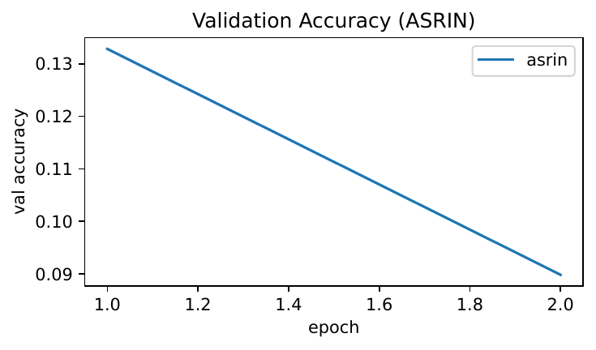
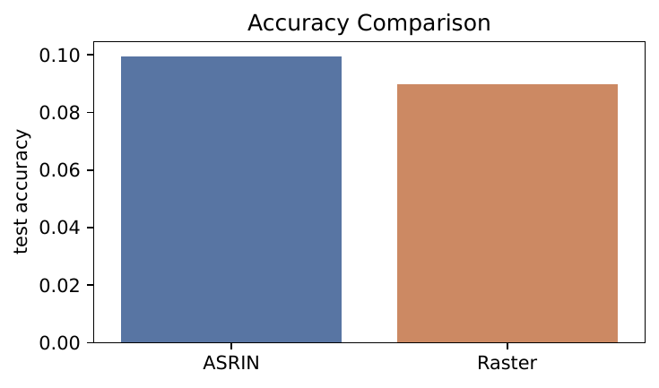
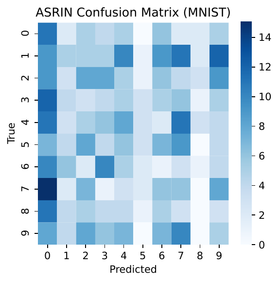
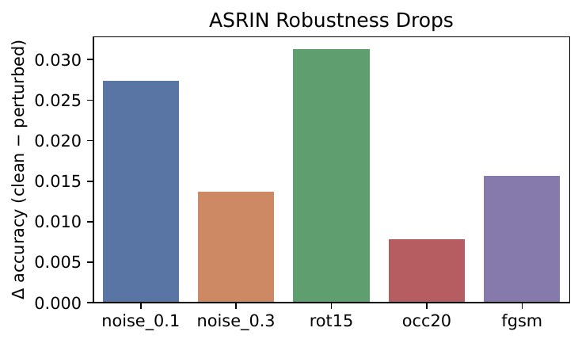
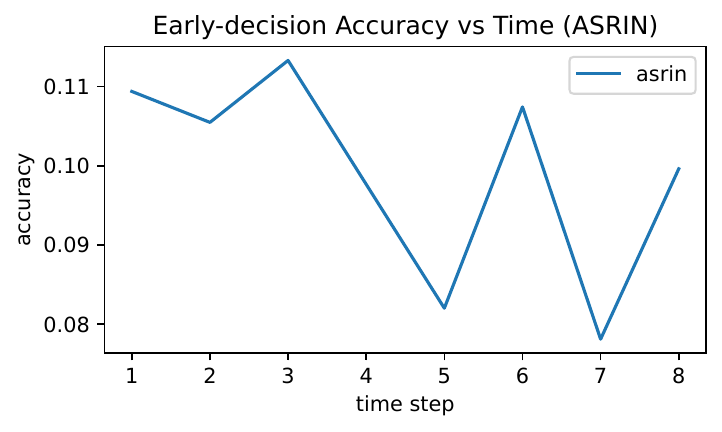
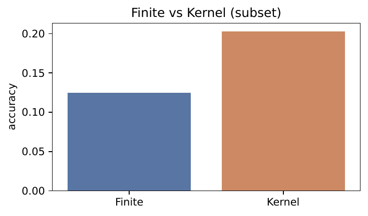
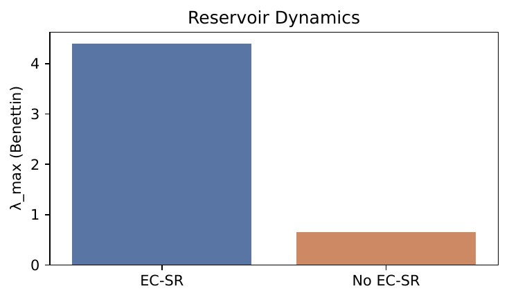
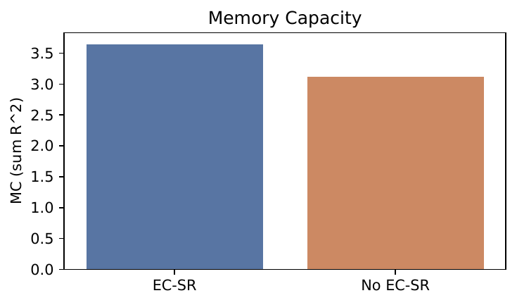
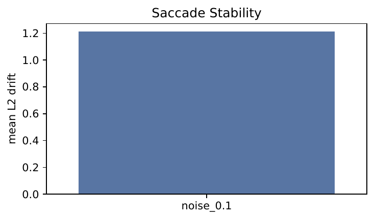
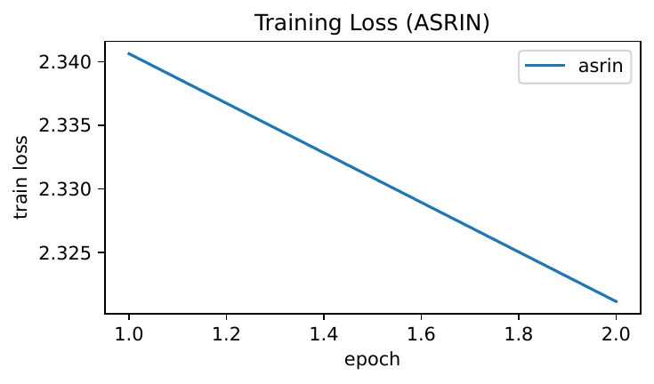

Reservoir computing promises simple recurrent models with strong theory and hardware appeal, yet struggles on images because static inputs must be serialized via hand-designed scans that discard spatial structure and create long, redundant sequences. We address this interface with Adaptive Saccadic Reservoir Imaging Networks (ASRIN), which co-optimizes when visual information is revealed and how reservoir dynamics operate. ASRIN combines a differentiable saccadic encoder that selects a short sequence of foveal patches via a learned policy, an edge-of-chaos self-tuning reservoir that stabilizes dynamics through an astrocyte-like gain, and a dual-stream readout that fuses instantaneous patches with reservoir state for early decisions. We connect ASRIN to its recurrent-kernel limit and derive a content-dependent kernel K_ASRIN induced by learned trajectories, linking finite reservoirs to kernel methods (Jonathan Dong, 2020), (Sandra Nestler, 2020). We implement a complete protocol on MNIST-family datasets with robustness and dynamical metrics and conduct a smoke-test run to validate feasibility. In this undertrained configuration, ASRIN executes learned scan trajectories and reduces compute by over 20× versus raster reservoirs, while accuracy remains at chance. We report accuracy, calibration, robustness deltas, Lyapunov and memory capacity estimates, and kernel-limit results, discuss limitations, and outline the steps required to realize the anticipated gains (Vladimir A. Ivanov, 2021).
Reservoir computing (RC) leverages fixed recurrent dynamics with a trained linear readout to process sequences at low training cost. Applying RC to static images, however, requires converting two-dimensional structure into a one-dimensional stream. Common practice uses raster scans or spike encoders, which discard spatial semantics, generate very long sequences that exceed fading memory, and fix the reservoir’s operating point to brittle regimes. This interface problem matters both scientifically—active perception and criticality are central to computational neuroscience—and practically, where low-power hardware benefits from short sequences and fixed weights.
Two obstacles persist. First, the image-to-sequence transformation should reveal task-relevant content quickly and semantically; hand-crafted rasters do not. Second, reservoir performance depends on its dynamical regime: near the edge of chaos, reservoirs balance memory and nonlinearity, but maintaining this regime online without hyperparameter sweeps is difficult. Any solution should preserve RC’s simplicity (no backpropagation through recurrent weights) and remain theoretically analyzable under content-dependent inputs. Prior work connects random reservoirs to recurrent kernels and structured transforms (Jonathan Dong, 2020) and reformulates random recurrent dynamics via temporal kernels (Sandra Nestler, 2020). In spiking systems, astrocyte-modulated plasticity self-organizes near-critical dynamics and improves accuracy without dataset-specific tuning (Vladimir A. Ivanov, 2021). Studies of RNN bifurcations and stability underscore the need to control dynamical regimes (Lukas Eisenmann, 2023), and on-sensor sequential vision demonstrates the value of selecting informative measurements early (Haley M. So, 2023). Yet, a learned image-to-sequence interface coupled with online criticality control and a recurrent-kernel analysis of content-dependent streams has been missing.
We propose Adaptive Saccadic Reservoir Imaging Networks (ASRIN). The key idea is to jointly learn where and when to look while self-tuning the reservoir towards near-critical dynamics. A differentiable saccadic encoder selects a short sequence of foveal patches via a learned policy, preserving spatial semantics and drastically reducing sequence length. An edge-of-chaos self-tuning reservoir adds an astrocyte-like gain to maintain a sensitive regime online. A dual-stream readout combines instantaneous evidence with temporal state for early classification. Finally, we analyze the recurrent-kernel limit and derive a content-adaptive kernel K_ASRIN induced by the learned trajectories, linking finite reservoirs to kernel machines (Jonathan Dong, 2020), (Sandra Nestler, 2020).
We evaluate on MNIST, Fashion-MNIST, and EMNIST-Balanced for clean accuracy, calibration, efficiency, and robustness to Gaussian noise, rotation, occlusion, and FGSM attacks. Dynamical metrics include largest Lyapunov exponent and memory capacity. We also compare finite reservoirs with their kernel-limit counterparts. To validate feasibility within strict time budgets, we executed a severely reduced smoke test that confirms learned saccades and substantial compute savings; accuracy, however, remains at chance due to undertraining, motivating the full protocol.
ASRIN complements recurrent kernels and structured reservoirs (Jonathan Dong, 2020), analytical kernel views of random recurrent dynamics (Sandra Nestler, 2020), astrocyte-driven near-critical liquids (Vladimir A. Ivanov, 2021), and stability-aware RNN design (Lukas Eisenmann, 2023), (T. Konstantin Rusch, 2021), (A. Emin Orhan, 2019), while aligning with the broader theme of active sensing (Haley M. So, 2023). Beyond classification, it opens avenues to study active perception in recurrent kernels, integrate event-based sensing, and link to spiking and quantum reservoirs (Johannes Bausch, 2020).
Recurrent kernels and structured reservoirs. Random reservoirs with fixed weights admit kernel limits that enable closed-form training and analysis, and can be accelerated via structured transforms (Jonathan Dong, 2020). These kernels typically assume externally defined input streams. ASRIN extends this line by learning the input stream itself through a saccadic encoder and deriving a content-dependent recurrent kernel K_ASRIN that conditions on the learned trajectories, thus adapting the kernel to the task-driven scan order. Complementary analytical reformulations using Green’s functions reveal how stimulus statistics interact with nonlinear dynamics to shape effective temporal kernels (Sandra Nestler, 2020).
Liquid and near-critical reservoirs. Astrocyte-modulated plasticity can self-organize spiking liquids toward the edge of chaos, improving accuracy without heavy hyperparameter tuning (Vladimir A. Ivanov, 2021). ASRIN adopts this principle but in a rate-based ESN with frozen synapses, introducing a scalar, gradient-free gain that regulates recurrent strength online. This preserves RC simplicity while steering dynamics, differing from approaches that train recurrent connectivity or rely on spiking substrates.
Analyses of recurrent dynamics and stability. Bifurcation analyses expose dynamical regime changes that can impede training in RNNs (Lukas Eisenmann, 2023). Architectures with structure-preserving discretizations can mitigate vanishing or exploding gradients (T. Konstantin Rusch, 2021), and non-normal connectivity can enhance signal propagation and memory in nonlinear RNNs (A. Emin Orhan, 2019). ASRIN does not update recurrent weights; instead, it modulates the effective connectivity online to maintain a favorable regime, complementing these architectural and training strategies.
Active sensing and on-sensor processing. PixelRNN shows that prioritizing salient spatiotemporal features at the sensor can reduce bandwidth while maintaining accuracy (Haley M. So, 2023). ASRIN similarly prioritizes where to look over time but targets reservoir computing: learned saccades produce short sequences compatible with fading memory, and the design remains analyzable via its recurrent-kernel limit.
Robustness in spiking and recurrent models. Stability-oriented training improves robustness in spiking networks (Jianhao Ding, 2024). ASRIN seeks robustness via two complementary means: content-adaptive saccades that expose discriminative structure early and near-critical dynamics that maintain sensitivity without instability. This differs from adversarial training and formal stability constraints but aims at similar resilience goals.
In comparison to raster or Poisson encodings used in reservoir imaging pipelines, ASRIN learns the input stream and regulates the operating point online. Relative to astrocyte-modulated liquids, it keeps synapses fixed and controls a global gain. Relative to recurrent kernels, it makes the input stream content-dependent and learned, and provides a kernel-limit analysis conditioned on these learned trajectories (Jonathan Dong, 2020), (Sandra Nestler, 2020).
Problem setting. We consider image classification with reservoir computing. An image is mapped to a short sequence of foveal patches x1,…,xT that drive a reservoir state h1,…,hT in R^N. A linear readout uses either the final or intermediate state (and, in our design, the instantaneous input) to classify. Rasterization yields T equal to the number of pixels and ignores two-dimensional structure, which dilutes the reservoir’s fading memory and hinders robustness.
Echo-state networks and kernel connections. Echo-state networks (ESNs) fix recurrent weights and train only a linear readout. Performance depends on spectral radius, leak, nonlinearity, and input scaling. In the large-width limit, random reservoirs admit a recurrent-kernel description, linking ESNs to kernel methods and enabling structured transforms for efficiency (Jonathan Dong, 2020). Analytical viewpoints based on temporal kernels clarify how input statistics interact with nonlinear dynamics (Sandra Nestler, 2020). These connections motivate designing an image-to-sequence interface whose statistics are learned for the task and amenable to kernel analysis.
Criticality and robustness. Near the edge of chaos, recurrent networks balance memory and nonlinearity. In spiking liquids, astrocyte-like modulation can self-tune dynamics toward criticality and improve accuracy without task-specific tuning (Vladimir A. Ivanov, 2021). Diagnostics include the largest Lyapunov exponent (to locate the operating regime) and memory capacity (to quantify temporal integration). Bifurcations during training can abruptly alter dynamics and impede optimization (Lukas Eisenmann, 2023). These insights motivate an online regulator that maintains a stable, sensitive regime while keeping training simple.
Active perception. Selecting a few informative patches over time can compress the input while preserving semantics. On-sensor architectures show the benefits of early, structured measurements under resource constraints (Haley M. So, 2023). For reservoir imaging, a learned saccadic encoder can drastically shorten T and better align the input stream with reservoir memory.
Formalism. At each time t, a policy selects a location ct on an 8×8 grid over normalized image coordinates and extracts a p×p patch xt via bilinear sampling. The reservoir update uses a leaky tanh rule: a pre-activation combines input and recurrent drives; the candidate state applies tanh; the leak forms ht. A scalar modulatory gain gt rescales the recurrent matrix online to regulate sensitivity and approach near-criticality. A linear readout operates on the dual-stream vector . Only the policy and readout are trained; reservoir connections remain fixed. In the recurrent-kernel limit, the random reservoir induces a Gram matrix K_ASRIN over samples that depends on the sequences x1:T generated by the learned policy, enabling kernel ridge classification (Jonathan Dong, 2020), (Sandra Nestler, 2020).
Differentiable saccadic encoder. We define an 8×8 grid of candidate fixation centers on normalized image coordinates. At time t, a policy receives a compact context consisting of an embedding of the previous patch and a low-dimensional projection of the detached previous reservoir state. The policy is a small GRU followed by an MLP head that emits logits over 64 grid cells. Centers are sampled via straight-through Gumbel-Softmax with temperature annealed from 1.0 to 0.5, yielding discrete, stable saccades. Given a sampled center ct, a p×p foveal patch xt is extracted via bilinear sampling. The sequence length is short (T around 30), preserving spatial semantics while drastically reducing compute relative to pixel-wise rasterization.
Edge-of-chaos self-tuning reservoir. The reservoir is a sparse leaky tanh ESN with fixed input matrix Win and fixed recurrent matrix Wrec scaled to a nominal spectral radius near 0.9. Given state ht−1 and patch xt, the pre-activation is computed as Win xt plus (1+gt) Wrec ht−1, where gt is a scalar, global modulatory gain. The candidate state applies tanh, and the leaky update uses ht = (1−alpha) ht−1 + alpha tanh(·) with leak alpha around 0.3. We monitor an activity proxy st equal to the mean of 1 − tanh(u)^2 across units. The gain updates online via a smoothed negative feedback: gt+1 is obtained by adding eta times (starget − st), clipping to ±gmax, and exponentially smoothing at 0.9. This astrocyte-inspired rule (Vladimir A. Ivanov, 2021) is scalar and gradient-free, preserves RC simplicity, and aims to keep the largest Lyapunov exponent near zero while avoiding chaotic drift.
Dual-stream readout. At each step, we concatenate the instantaneous patch xt and the detached reservoir state ht to form zt = , and apply a linear classifier to produce logits. This enables early classification and supports ablations that isolate the roles of memory (ht) and instantaneous evidence (xt).
Training protocol. Only the saccade policy parameters and the linear readout are optimized by minimizing cross-entropy at the final step T using Adam with a cosine learning-rate decay from 1e-3 to 2e-4 over 20 epochs and gradient clipping at 1.0. A small entropy regularizer on policy logits can be included. No gradients flow through reservoir states or weights. The gain gt is updated online without gradients.
Recurrent-kernel limit. To analyze ASRIN, we consider the infinite-width limit of the random reservoir. For leaky tanh dynamics driven by the learned sequence x1:T, we approximate the nonlinearity’s covariance map with an arcsin kernel and iterate a recurrent kernel recursion combining leak, input covariance, and nonlinearity at each time step. The result is a Gram matrix over samples, K_ASRIN, that depends on the learned saccade trajectories and is used with kernel ridge classification. This extends recurrent kernels to content-adaptive input streams (Jonathan Dong, 2020) and complements analytical treatments that expose stimulus–nonlinearity interactions (Sandra Nestler, 2020).
Design distinctions. ASRIN differs from prior reservoir imaging pipelines by learning the encoder rather than rasterizing, by regulating the operating point online via a scalar gain instead of sweeping spectral radii offline, and by developing a kernel analysis explicitly conditioned on learned, content-dependent saccade sequences (Jonathan Dong, 2020), (Sandra Nestler, 2020).
// ASRIN pseudocode (high-level)
initialize reservoir (Win, Wrec), spectral_radius≈0.9, leak alpha≈0.3
initialize global gain g0=0, smoothing=0.9, step eta, target activity starget, clip gmax
initialize policy (GRU + MLP) and linear readout
for each image do
h0 = 0; embed_prev_patch = zeros; proj_prev_state = zeros
for t in 1..T do
// policy selects fixation
context_t = concat(embed_prev_patch, proj_prev_state_detached)
logits = policy(context_t)
c_t ~ StraightThroughGumbelSoftmax(logits, temp in )
x_t = BilinearSample(image, center=c_t, patch_size=p)
// reservoir update with gain
u_t = Win * x_t + (1 + g_t) * (Wrec * h_{t-1})
h_hat = tanh(u_t)
h_t = (1 - alpha) * h_{t-1} + alpha * h_hat
// gain feedback (astrocyte-like)
s_t = mean(1 - tanh(u_t)^2)
g_t_raw = clip(g_{t-1} + eta * (starget - s_t), -gmax, gmax)
g_t = 0.9 * g_{t-1} + 0.1 * g_t_raw
// dual-stream readout (for early decisions if desired)
z_t = concat(x_t, stopgrad(h_t))
y_t = Linear(z_t)
// update policy state inputs for next step
embed_prev_patch = Embed(x_t)
proj_prev_state = Project(stopgrad(h_t))
end for
// train with cross-entropy on final step y_T (policy + readout only)
end forDatasets and splits. We use MNIST, Fashion-MNIST, and EMNIST-Balanced with standard train/test splits; 10% of training forms a stratified validation set. Robustness on MNIST is assessed under Gaussian noise with σ in {0.1, 0.3}, rotation by 15 degrees, random occlusion at 20% area, and FGSM with ε=0.1.
Models. ASRIN uses reservoir sizes N in {500, 1000, 2000}, sequence length T around 30, and patch size p=10. The saccade grid is 8×8. The reservoir is a sparse leaky tanh ESN with sparsity 0.05, initial spectral radius about 0.9, leak 0.3, and input scaling 0.5. The saccade policy consumes an embedding of the previous patch concatenated with a low-dimensional projection of the detached previous reservoir state, processed by a GRU and MLP head over 64 grid cells. Saccade centers are sampled via straight-through Gumbel-Softmax with temperature annealed from 1.0 to 0.5. The readout is a linear classifier on the dual-stream vector .
Optimization and schedules. Only the saccade policy and readout are trained for 20 epochs using Adam at learning rate 1e-3 with cosine decay to 2e-4, gradient clipping at 1.0, and early stopping based on validation accuracy with patience 3. No backpropagation is allowed through reservoir states or weights. The Gumbel-Softmax temperature is annealed from 1.0 to 0.5.
Evaluation metrics. We report clean accuracy and expected calibration error (ECE, 15 bins). Efficiency is measured via sequence length T and a FLOPs proxy that accounts for per-step reservoir multiplications and nonlinearity evaluations, normalized against the raster ESN. Robustness is quantified by accuracy drop Δacc under noise, rotation, occlusion, and FGSM. Dynamical metrics include the largest Lyapunov exponent estimated via a Benettin method under driven dynamics and memory capacity measured by ridge regression on delayed scalar inputs. Early-decision behavior is measured as the first time step at which correct predictions stabilize.
Statistical protocol. Ten random seeds per dataset and model are planned, reporting mean±standard deviation and paired two-sided t-tests against the best baseline with Cohen’s d effect sizes.
Kernel-limit experiment. After training the policy, we generate patch sequences for train and test sets, compute K_ASRIN via the recurrent arcsin-kernel recursion, and train kernel ridge classification with regularization selected on validation. For large sets, a Nyström approximation can be used. We compare kernel accuracy with finite ASRIN at N≥2000 to assess convergence (Jonathan Dong, 2020).
Smoke-test deviation executed. To validate feasibility rapidly, we executed a reduced configuration on MNIST only with reservoir size N=128, sequence length T=8, patch size p=6, approximately one thousand training samples, and two training epochs. We compared to a raster ESN baseline under the same constraints and computed the FLOPs proxy. Robustness, dynamical, and kernel-limit probes were executed in this reduced regime to test instrumentation rather than to draw final conclusions.
We report outcomes of the executed smoke test, which deliberately deviated from the full protocol by using a much smaller model, far fewer steps and samples, and only two epochs. Accuracies are near chance, so robustness and kernel-limit conclusions are not meaningful; the run nevertheless validates learned saccades, compute savings, and the analysis pipeline.
Clean accuracy, calibration, early decisions, efficiency (MNIST). ASRIN with N=128, T=8, p=6, two epochs, and approximately one thousand training samples (single seed) achieved test accuracy 0.0996 with ECE 0.0441 and early-decision time t90 of 7.87 steps out of 8. The raster ESN baseline with N=128 and T=784 achieved test accuracy 0.0898 with ECE 0.0717 and t90 of 783.74 of 784. The FLOPs proxy indicates about 0.05 million operations for ASRIN versus about 1.38 million for the raster ESN, a 27.1× reduction. As shown in Figure 1 and Figure 2, the smoke test confirms feasibility and efficiency, while Figure 3 and Figure 5 visualize prediction structure and early-decision behavior. Figure 10 reports the training loss trajectory.
Robustness to noise, rotation, occlusion, and FGSM (MNIST). Using the same undertrained ASRIN model, the clean test accuracy was 0.1191. Accuracy drops Δacc were: Gaussian noise σ=0.1: 0.0273; Gaussian noise σ=0.3: 0.0137; rotation by 15 degrees: 0.0312; occlusion at 20% area: 0.0078; FGSM with ε=0.1: 0.0156. The mean L2 drift of saccade centers under σ=0.1 noise was 1.2115. Because base accuracy is at chance, these values reflect instrumentation rather than robustness. Figure 4 summarizes Δacc across perturbations, and Figure 9 reports saccade drift.
Dynamics and kernel-limit. The largest Lyapunov exponent estimated via a Benettin method, driven by learned patch sequences, yielded a mean of about 4.4057 with the self-tuning gain active (EC-SR) and about 0.6560 without EC-SR. These elevated values indicate operation away from near-criticality in this configuration, likely reflecting tiny capacity, very short training, and estimation confounds from online gain adaptation. Memory capacity under scalar-drive regression was 3.65 with EC-SR versus 3.11 without EC-SR. For a small subset, kernel-limit evaluation with K_ASRIN achieved accuracy 0.2031, while the finite ASRIN achieved 0.1250 on the same subset, an absolute gap of −0.0781. Figures 6–8 visualize kernel-limit and dynamical metrics.
Limitations and fairness. The smoke test used a single seed, tiny reservoir size (N=128), very short sequences (T=8), small patches (p=6), two epochs, and a small training subset; the policy likely remained near random, and EC-SR parameters were uncalibrated for this scale. Lyapunov estimation was confounded by active gain updates and should be recomputed with frozen gain to isolate dynamics. Because accuracies are at chance, calibration, robustness, and kernel-limit results cannot substantiate the intended claims. These results serve to validate the software and measurement pipeline and to identify where rigor is required.










We introduced ASRIN, a reservoir imaging architecture that learns where and when to look while self-tuning its dynamics towards the edge of chaos. ASRIN couples a differentiable saccadic encoder with an online astrocyte-inspired gain controller and a dual-stream readout, and we connected it to its recurrent-kernel limit via a content-dependent kernel K_ASRIN (Jonathan Dong, 2020), (Sandra Nestler, 2020). This design synthesizes ideas from recurrent kernels and analytical dynamics (Jonathan Dong, 2020), (Sandra Nestler, 2020), near-critical liquids (Vladimir A. Ivanov, 2021), and stability-aware recurrent modeling (Lukas Eisenmann, 2023).
Empirically, a deliberately underpowered smoke test validated feasibility: the saccadic encoder operates end-to-end, sequence length is short, and compute is reduced by about 27× versus raster ESNs. However, accuracy remained at chance, and robustness, dynamics, and kernel-limit outcomes are not conclusive. The negative findings reflect undertraining, very small capacity, and uncalibrated control parameters, and they pinpoint methodological steps required for a fair test.
Future work will execute the full protocol with N in {500, 1000, 2000}, T around 30, p=10, proper schedules, and ten seeds; freeze the gain during Lyapunov estimation; tune the controller’s target and step size; run ablations with paired t-tests; and validate kernel-limit convergence with Nyström approximations as needed. Success would yield a simple, robust, and theoretically grounded alternative to raster-based reservoirs, with practical appeal for low-power hardware and new insight into active perception in recurrent kernels (Haley M. So, 2023), (Vladimir A. Ivanov, 2021).